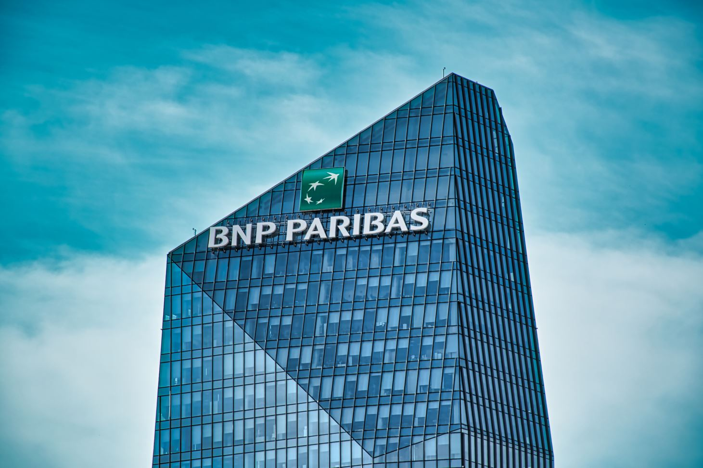

Naelle Mezghenna
Étudiante en réseaux
Passionnée par l’informatique et les réseaux, je poursuis mes études en BTS SIO option SISR afin de développer mes compétences techniques et humaines. Rigoureuse, curieuse et motivée, je souhaite évoluer dans un environnement stimulant et contribuer à la transformation numérique des entreprises.
BTS SIO
Le Brevet de Technicien Supérieur aux Services Informatiques aux Organisations (BTS SIO) est un programme de niveau Bac+2 s'adresse aux personnes qui souhaitent se former en deux ans aux métiers d'administrateur réseau ou de développeur.
Option SISR
Cette spécialité vous formera sur la gestion, la maintenance des infrastructures réseau. Vous apprendrez à gérer des systèmes d'exploitation, des services réseaux, mais aussi à sécuriser une infrastructure et à proposer des solutions pour optimiser la performance d'un réseau.

Entreprise
BNP Paribas
Au sein de BNP Paribas, j’ai eu l’opportunité de découvrir le fonctionnement d’un grand groupe bancaire international. Cette expérience m’a permis de développer mon sens de l’organisation, d’approfondir mes connaissances en gestion de réseaux et de participer à des projets concrets en équipe.
Epreuve E5
Tableau de synthèse
.jpg)
Epreuve E6
Active Directory
Projet d’administration et de gestion des utilisateurs via Active Directory, permettant la centralisation et la sécurisation des accès au sein de l’entreprise.
Documentation
GLPI
Déploiement et gestion d’un outil de gestion de parc informatique avec GLPI, facilitant le suivi, la maintenance et l’inventaire des équipements.
Documentation